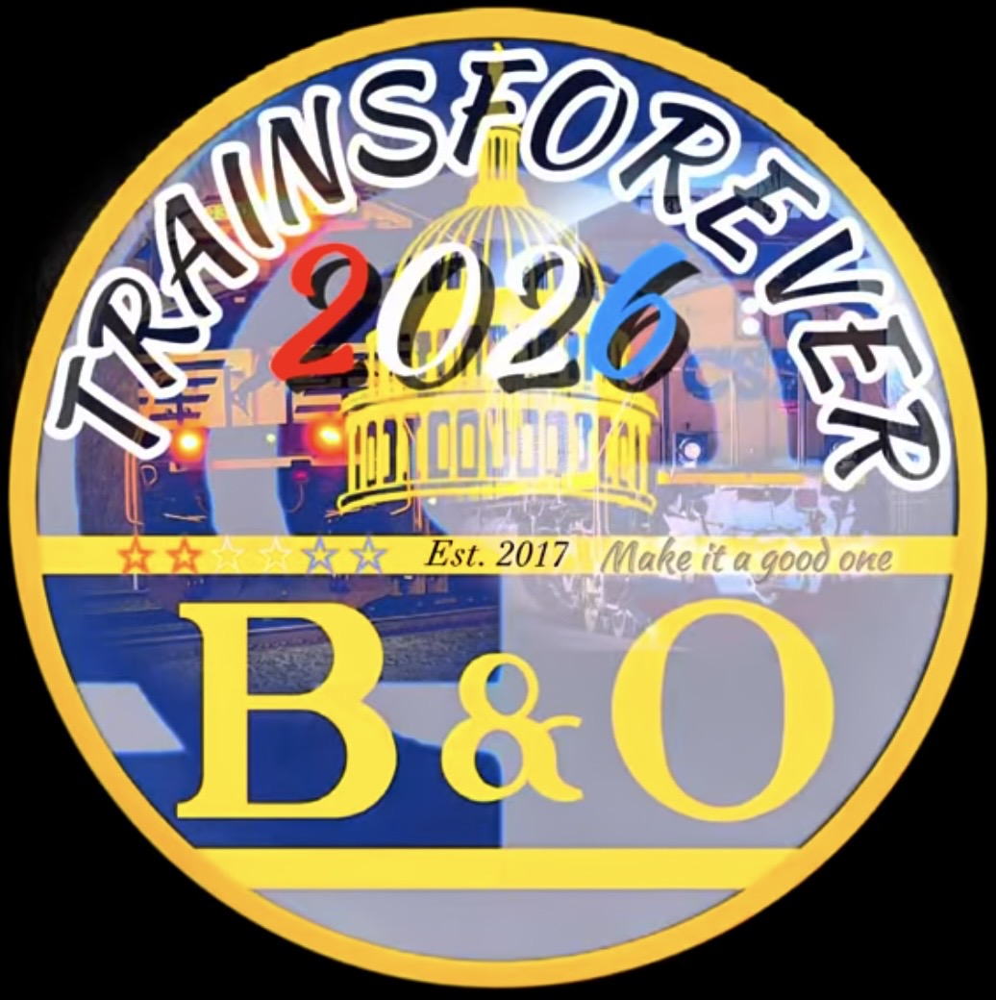

Preserving Railroad History • One Locomotive at a Time
TrainsForever Est. 2017 • Museum Est. 2026
Welcome to the TrainsForever Museum Archive, a permanent digital railroad museum dedicated to preserving locomotives, paint schemes, special railroad equipment, photographs, videos, and the unforgettable memories made while railfanning.
Unlike a traditional railroad website, every locomotive inside this museum is displayed as its own permanent exhibit containing documented catches, archived videos, photographs, statistics, railroad history, curator's notes, and personal memories.
Thank you for visiting and helping preserve railroad history one locomotive at a time.
Every locomotive tells a story.
Some become photographs. Some become videos. Others become unforgettable memories shared with friends beside the railroad.
Over time, I realized I wasn't simply collecting videos. I was preserving railroad history.
This museum was created so those memories can live on as permanent exhibits for future railroad enthusiasts.
A collection of the most frequently documented locomotives in the TrainsForever Museum Archive.
Current heritage unit totals represented throughout the TrainsForever Museum Archive.
Choose a railroad collection to begin exploring the museum. Each gallery contains heritage units, anniversary locomotives, special interest exhibits, rare power, photographs, archived videos, and curator's notes.
Heritage Units, Special Interest locomotives, Rarities, Rare Consists, Museum Records, and documented railfan memories.
Heritage Units, Spirit Series, anniversary locomotives, and future museum exhibits.
Heritage Fleet, anniversary units, executive locomotives, and Canadian operations.
Heritage Fleet, Olympic Units, anniversary locomotives, and rare power.
Heritage Fleet, Military Units, maroon paint schemes, and historic power.
Veterans Units, anniversary equipment, special paint schemes, and passenger exhibits.
Chicago commuter equipment, heritage paint, cab cars, and future exhibits.
Every exhibit represents more than a locomotive—it represents the people who shared the experience. Whenever a companion was present during a documented catch, one or more of the symbols below will appear throughout the museum.
Watch a featured presentation from the TrainsForever YouTube Archive.
A selected railroad video chosen by the curator.
Thank you for visiting the TrainsForever Museum Archive. My goal is to preserve railroad history through photographs, videos, documented catches, and the stories behind them. Every locomotive displayed here represents a real experience, and I hope this museum allows those moments to live on for future generations of railroad enthusiasts.
Thank you for taking the time to explore the TrainsForever Museum Archive.
Every photograph, video, documented catch, and exhibit preserved here represents a genuine moment in railroad history. This museum will continue to grow as new locomotives, special trains, and unforgettable memories are added to the collection.
Whether this is your first visit or your hundredth, thank you for helping keep railroad history alive. We hope you'll return as new galleries and exhibits continue to open.
See you trackside.